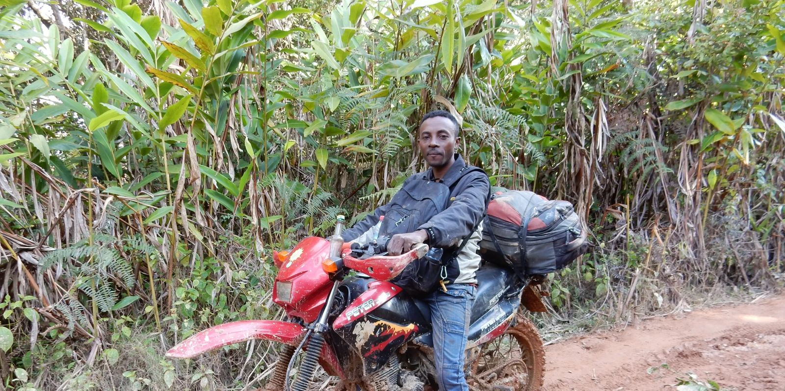
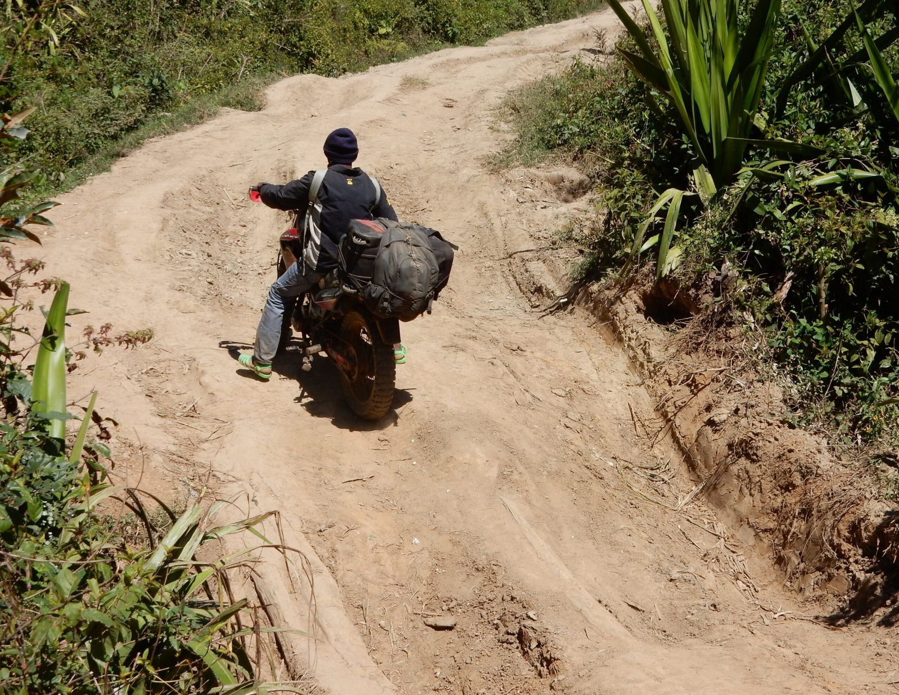
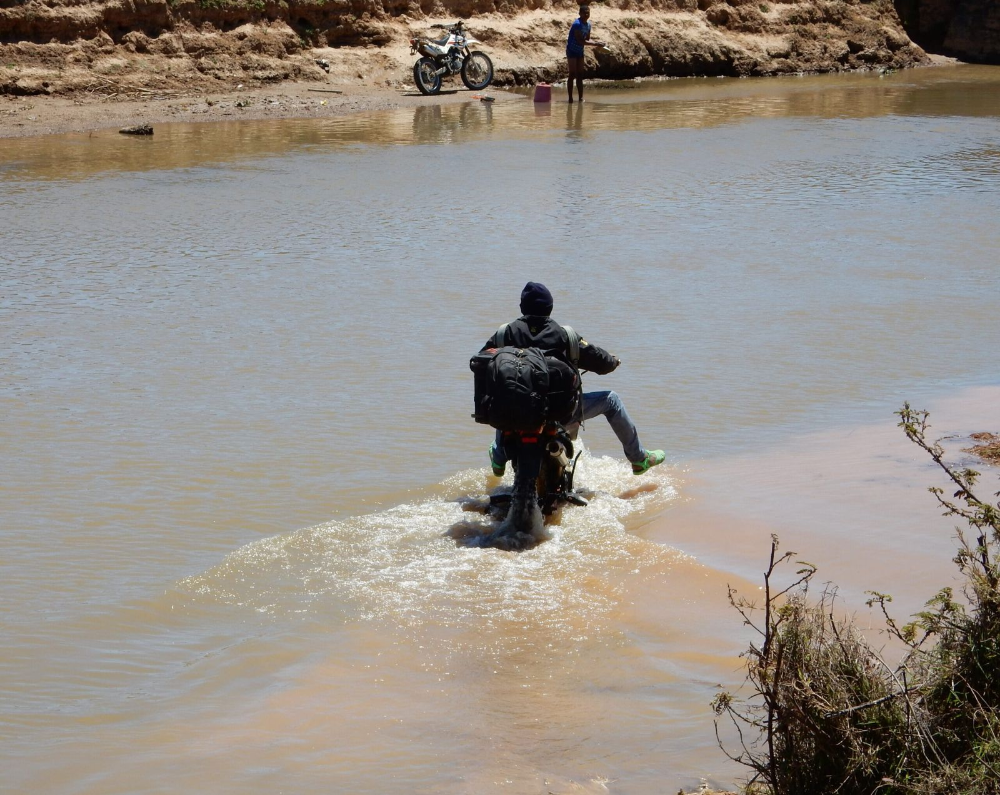

html
CrossMadagascar: MG127, Off-Road Motorcycle Adventure
MG127 · Adventure Circuit
CrossMadagascar: The Real Off-Road Adventure
Saddle up a lightweight Chinese-built motorcycle and cross Madagascar off-road with an experienced guide. You will NEVER forget this.

An intense circuit along off-road tracks, days without encountering a single foreign tourist, and landscapes that no brochure can prepare you for. Good physical fitness is required: your back and core will be put to the test. This is Madagascar as almost no one sees it.
At a Glance
The Essentials
This is not a race. There are no rankings, no time trials. It's a real crossing, with real conditions and real rewards.
The circuit departs from the capital Antananarivo on brand-new 150–200cc bikes. Made in China and well-suited to the terrain, these lightweight machines are your companions for the entire journey. A PRIORI guide follows on his own motorcycle throughout.
Day by Day
The Route: North & Beyond
The journey unfolds in two major legs. The first brings you west and north along mostly paved, if potholed, roads. The second plunges into terrain where cars no longer venture.
From the capital, the route heads west for a warm-up loop before swinging north in earnest. A stop at Ankarafantsika offers a guided walk through exceptional dry-forest flora and fauna. After passing through the lively coastal city of Mahajanga, you cross savannahs and palm groves around Port Bergé and arrive in Antsohihy.
These first thousand kilometres are largely paved, though potholes are a constant companion. The riding is demanding but manageable.
This is where the real adventure begins. Heading east through hills, rice-paddy plains, and remote villages, you enter zones where cars simply don't go. The only vehicles you might meet: a bull-strong tractor clawing through the mud with a single-axle trailer.
- Tracks Sand and laterite pistes, slippery when wet.
- Water River crossings, including one full river ford.
- Villages Porters still carry everything (cement, foam mattresses, beer crates) on their backs.
- Lodging Very basic. No alternatives exist. That's the point.

Leg 2: heading east toward Andapa
The bikes don't just carry you: they carry a purpose. At journey's end in Andapa, the motorcycles are handed over to a humanitarian project identified by PRIORI.
After delivering the bikes, the group heads to the Indian Ocean town of Sambava to rest and decompress before flying back to Antananarivo.
Full Itinerary
Leg 1
Antananarivo → Ampefy → Sambaina → Antananarivo → Maevatanana → Ankarafantsika → Antsohihy
Leg 2
Antsohihy → Ambatoriha → Ambodiadabo → Ambatolona → Andapa → Sambava → Antananarivo (by air)
What to Expect
Conditions & Rules of the Road
CrossMadagascar is not a supported rally. There is no assistance vehicle, no replacement bike if yours breaks down beyond repair, and no hotel upgrade waiting at the end of the track. This is what makes it extraordinary.
Key requirements
- Each rider drives their own bike. Passengers are not permitted. You carry your own luggage, maximum 15 kg (helmet, clothing and shoes excluded).
- You bring your own gear. Helmet, riding clothes and appropriate footwear must be provided by each participant.
- Groups are self-formed. Minimum 4, maximum 8 riders. The group must be assembled before booking: friends, colleagues, club members.
- Repairs are your responsibility. If your bike breaks down irreparably, no replacement is provided. Basic mechanical self-sufficiency is a plus.
- Insurance is personal. Standard Madagascar coverage is included, but each rider must arrange their own supplementary and sufficient insurance before departure.

River ford: one of several on the eastern leg
For roughly one week, accommodation is basic, toilets and showers are rudimentary, and meals consist of rice, meat and soup. No frills, and no regrets.
Daytime temperatures along the route typically range between 25°C and 35°C. Rain is unlikely during the June–October window, but the laterite tracks can remain slippery well after the last shower.
Pricing Details
What's Included & What Isn't
Included
- Return flights from Switzerland, including airport taxes
- Domestic flight Sambava → Antananarivo, including taxes
- 18 nights in single room with breakfast
- Motorcycle for the full itinerary (Antananarivo to Sambava)
- Fuel, insurance & unlimited mileage on the planned route
- Guided visit to the Soavoanio coconut plantation
- Guided visit & entry to the Ambohimanitra nursery with lunch
- All airport–hotel transfers as per itinerary
- Day-use room before the evening return flight
- PRIORI guide for the full duration, including their meals & lodging
Not Included
- Visa and personal insurance
- Lunches and picnics (except day 16 in Sambava)
- Dinners throughout the trip
- All drinks
- Local guides (mandatory) and national park / reserve entry fees
- Personal expenses in Antananarivo and along the route